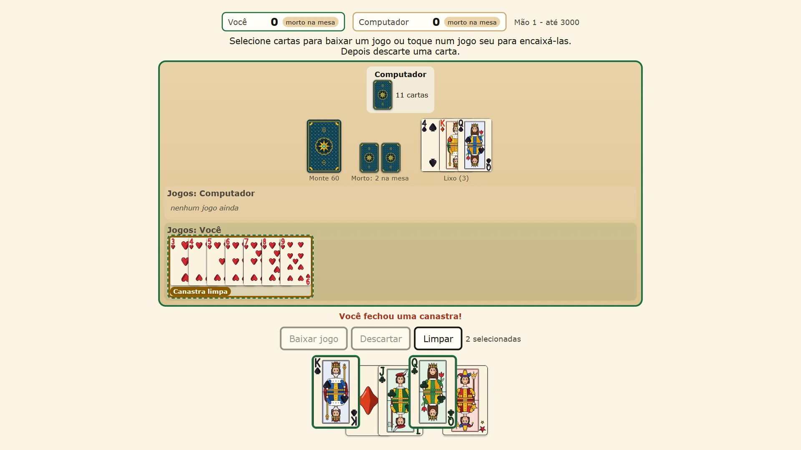
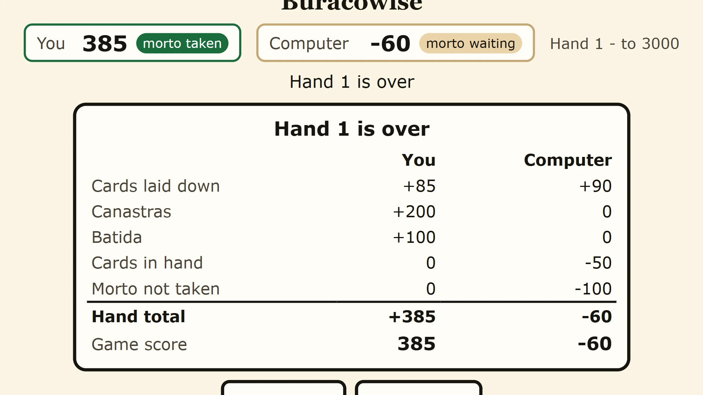

Buracowise — play buraco online free
Buraco is the card game of Brazil, played with two decks and four jokers. Lay down sequences, take the whole discard pile when it pays, pick up your morto and close a clean canastra to go out. Play the computer at three levels, 2 vs 2 with a computer partner, or invite friends to a room.


How to play buraco
Buraco uses two full decks and four jokers, 108 cards. Each player gets eleven cards, and two more piles of eleven, the mortos, wait face down. Two players each have a morto; four players play in two teams of partners, one morto per team.
On your turn you draw the top card of the stock or take the whole discard pile. Then you may lay down new sequences and add cards to your team's sequences, and you end the turn by discarding one card.
Sequences and wild cards
A sequence, a jogo, is three or more cards of the same suit in a row, like 5, 6 and 7 of hearts. The ace can be low (A-2-3) or high (Q-K-A), but a sequence never turns the corner from king to two. Sets of the same rank do not count.
The 2s and the jokers are wild and can stand in for any card, but a sequence may hold only one wild card. A 2 in its own place, like the 2 of hearts between the ace and the 3 of hearts, is a normal card, not a wild.
Canastras
A sequence of seven cards or more is a canastra. Without a wild card it is a clean canastra (canastra limpa), worth 200 points; with a wild card it is a dirty canastra (canastra suja), worth 100. A clean sequence from ace to king is worth 500, and the full run from ace to ace is worth 1000.
The morto and going out
The first time you run out of cards, your team takes its morto. If you ran out by laying cards down, you pick it up at once and keep playing; if you ran out by discarding, it becomes your hand on your next turn.
To go out, the batida, your team needs its morto and at least one clean canastra. Going out ends the hand and is worth 100 points. Until then you must always keep a card to discard. If the stock runs out, a morto nobody took becomes the stock; when nothing is left to draw, the hand ends.
Points
Every card laid down scores: the joker 50, a 2 10, the ace 15, the king to the 8 10 each, and the 7 to the 3 5 each. Add the canastras and the batida, then take away the cards still in your hand and 100 if your team never took its morto. The first team to reach the target, 1500, 2000 or 3000 points, at the end of a hand wins.
Three ways to play
1 vs 1 against the computer has three levels. Easy is gentle and forgets things. Medium weighs the discard pile and will not feed your sequences. Hard also remembers what you took from the pile, saves its wild cards for canastras and sheds points when you are close to going out.
2 vs 2 puts a computer partner opposite you against two computer opponents. Partners lay their cards on the same sequences and share one morto.
Friend online opens a room for 1 vs 1 or 2 vs 2. Send the link, or read out the six-letter code. The host deals, and each player only ever receives their own cards: the other hands, the mortos and the stock stay hidden. Nobody needs an account.
Tips for winning
Take the discard pile when it is big and you can lay some of it down at once. Build toward one clean canastra first, because without it you cannot go out. Keep your 2s and jokers to turn a six-card sequence into a canastra, and watch which cards the other side picked up before you discard next to them.
More card and board games
For another card game with a partner, try Trucowise (Argentine truco). For a two-player board game, try Rookwise (chess) or Gomowise (Gomoku, five in a row).
More like this: 2-player games online · Multiplayer browser games